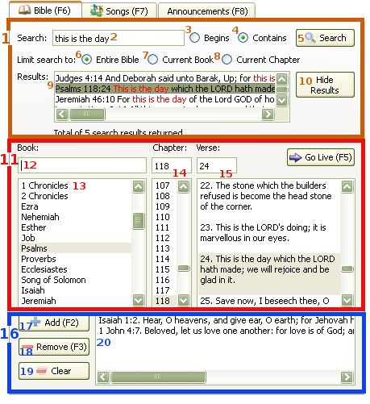

2.2 Showing Bible Verse
softProjector allows you to show a Bible verse on the screen. You are allowed to show one verse at a time. Ability to show multiple verses will possibly be in future. You are also are allowed to show a verse from two Bibles simultaneously.
To show a verse:
You may also enter book name in book filter box(12) above book list. This will filter book and leave you only matching books.
You may also enter chapter number in the text field above the chapter list.
You may also enter chapter number in the text field above the chapter list.
After you have
selected a verse that you want to show, you may click "Go Live" button or double click the verse.

1. Bible Search Block:
An area where a particular Bible verse can be search by a phrase or a part
of a phrase.
Field where search word/phrase is entered. Search string is case insensitive and all none alphanumeric characters will be removed.
Search all verses that begin with the search word/phrase.
Search all verses that contain the search word/phrase. Will also return all verses that begin with search word/phrase.
When pressed, it will search Bible, and afterwards, will display results below.
Limit search to the entire Bible. The search will be performed over entire Bible.
Limit search to currently selected book. Will search only the book that is selected.
Limit search to currently selected chapter. Will search only the chapter that is selected of the book that is selected.
This list will contain search results. Search word/phrase will be highlighted in red. Search phrases that contain punctuation marks or other none alphanumeric characters may not always be highlighter. For example: search phrase "and God" will not highlight result of and, God", but will bring back the result.
SoftProjector will return only 281 results. A label below search result list will notify how many results are returned and if it is over limit. If it is over limit, please modify search word/phrase or other search options.
Double-click the a verse and it will sent selected verse to be shown.
This will hide search result list.
11. Bible Look-up Block:
In this block, Bible passages are looked up and prepared to be shown
Quickly find Bible passage by entering book, chapter and verse separated by a space(" "). While book, chapter, or verse is entered, it will automatically select corresponding passage. After passage information is entered, and correct verse is selected, just press "F5" or click on "Go Live" button.
Book can be beginning or part of a book, entire book name is not required, ex: mat for Matthew. Incases where book names are in series, do not use space the number and book name, ex: use 1cor instead of 1 cor for 1st Corinthians. Few examples of full passage selection: da 3 12 for Daniel 3:12; 1the 5 8 for 1st Thessalonians 5:8.
Hold either entire list of book or only the list that matches entry in the quick find field. Select the book.
Chapter can be entered in the entry field or selected from the list.
Verse can be entered in the entry field or selected from the list.
Double-click on a verse in the list and it will be sent to be shown.
16. History/Hold Block:
History/Hold block contains verses that have been sent to be shown or verses
that has been added by "Add" button.
"Add" button will add selected passage above and add it to the history list.
"Remove" button will remove selected verse in the list and remove it from the list.
"Clear" button will clear entire history list.
After a verse is sent to be shown, it will be stored in this list until removes. Double-click a verse and it will be shown again without adding it second time to the list.